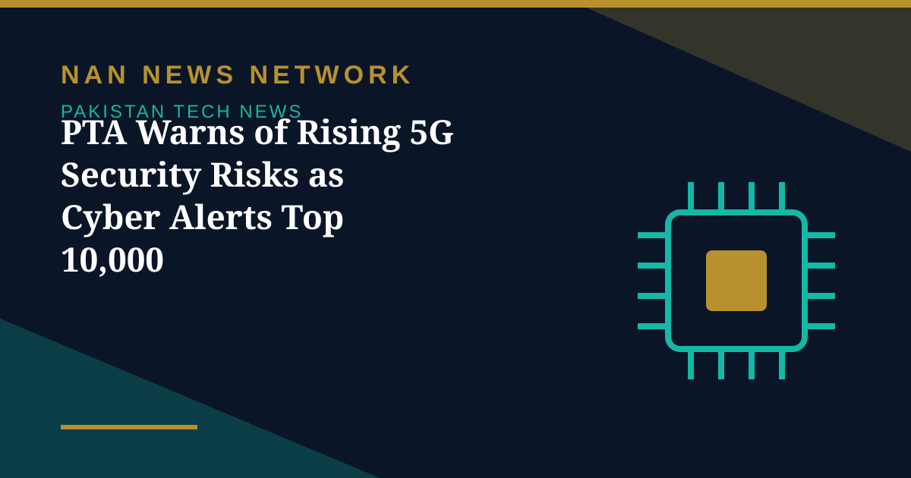

PTA Warns of Rising 5G Security Risks as Cyber Alerts Top 10,000

Pakistan's telecom regulator has warned of mounting cybersecurity risks facing the country's 5G networks, according to its latest annual security report covered on October 29, 2026. The report records more than 10,000 cyber alerts, with 1,500 incidents escalated and 534 malicious addresses blocked.
Where the risks sit
According to the findings, vulnerabilities span 5G user devices, radio access networks, core functions, application programming interfaces and cloud-hosted environments. The 5G core remains a primary target because it processes sensitive subscriber records, session management data and routing information, while edge networks face heightened risks due to distributed architectures and containerised workloads. Reported risks range from subscriber data theft and real-time location tracking to devastating denial-of-service attacks.
A tougher rulebook
To address emerging threats, the PTA developed the Critical Telecom Data and Infrastructure Security Regulations 2025, revising the framework introduced in 2020. The updated framework expands cybersecurity requirements covering asset management, risk assessment, data privacy, cloud security, insider threats, business continuity and incident response. It also strengthens requirements for identity verification, access controls and coordination with the national telecom security monitoring system.
What operators must do next
The regulator has introduced comprehensive 5G security guidelines emphasising proactive safeguards over retroactive fixes. Operators must implement zero-trust architectures, secure boot mechanisms and AI-driven anomaly detection, with mandatory deployment of advanced identifiers to shield permanent subscriber credentials from interception over the air. Under its proposed 2025-26 audit programme, the regulator plans to require full audit coverage of Category I and Category II telecom licensees and conduct validation audits of selected operators in other categories.
The report emphasised that improving cybersecurity monitoring, strengthening technical controls and expanding cooperation between regulators and telecom operators would be necessary to protect Pakistan's growing digital infrastructure.
Sources: Public news reports, October 2026.
More on Pakistan Tech News
- PTA Fines Mobile and Internet Firms Over Rs3.41 Billion Over Consumer Complaints
- Pakistan Internet May Slow Until November 2 as AAE-1 Cable Undergoes Repairs
- PM Sets November Deadline for Alibaba-Backed AI and Digitalisation Projects
- Pakistan's 5G Now Reaches 24 Cities After $509 Million Spectrum Auction
- Pakistan Announces Urdu AI Model 'Buraq' to Keep National Data at Home
- PM Launches Two-Year Drive to Give 500,000 Chromebooks to Talented Students
- Pakistan to Host UN Space Technology Conference on Early Warnings and Climate Action
- PAK-US Tech Connect 2026 Takes 16 Pakistani Tech Firms Across America
- Pakistan Wins 11 Awards at the ASOCIO Digital and AI Awards 2026
- Pakistan Showcases AI Innovations at Abu Dhabi's AI Everything Global 2026